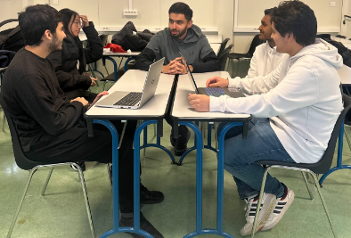
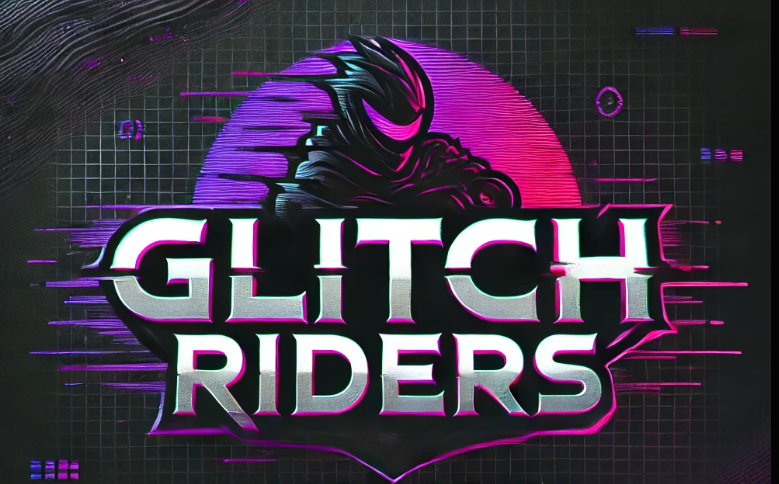

Notre entreprise
Glitch Riders est une jeune entreprise de jeux vidéo située à Villejuif, en banlieue parisienne. Fondée par un groupe de développeurs diplômés de l'EPITA, elle se consacre à la création de jeux de Survival Horror innovants et immersifs.
Notre vision repose sur une approche audacieuse et créative pour réinventer les règles de la peur et de l'immersion. Grâce à notre petite structure, nous avons la liberté d'explorer des concepts inédits, loin des contraintes des grands studios.
Notre dernier projet, "Pixel Rift", incarne cette ambition. Ce jeu promet une expérience intense et imprévisible, avec des environnements immersifs et des mécanismes de gameplay uniques.

